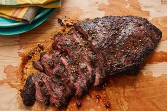

The perfect steak marinade

This delicious flat iron steak was created from a combination of different recipes that I read. I combined, adjusted, and finally perfected the marinade and cooking time to my taste. I'm sure you will love it as well. After all, it is perfection!
Additional cooking information
- Prep Time: 5 minutes
- Cook Time: 10 minutes
- Total Time: 15 minutes
- Servings: 6
Ingredients:
- Oil: This top-rated steak marinade recipe starts with olive oil, which keeps the meat nice and moist.
- Sauces: You'll need Worcestershire sauce and soy sauce. Hot sauce is optional, but it's a great addition for people who appreciate a little heat.
- Lemon Juice: The acidity from the lemon juice cuts through the other flavors, adding welcome brightness. The acid also helps tenderize the meat even further.
- Spices and seasonings: This flavorful marinade is seasoned with dried basil, garlic powder, dried parsley flakes, white pepper, and minced garlic.
Instructions:
- Gather all ingredients.
- Place olive oil, soy sauce, lemon juice, Worcestershire sauce, basil, garlic powder, parsley, white pepper, minced garlic, and hot pepper sauce in a blender; blend on high speed until thoroughly combined, about 30 seconds.